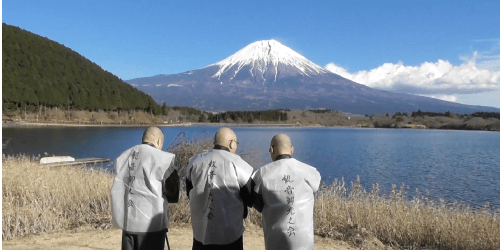

富士観音水へのご寄付について
観音御光之会の静岡にある教区には霊峰富士の水が湧き出ています。これを「富士観音水」と名付け、霊峰富士の大いなる恵みに対して毎日、朝・昼・夕と観音経、般若心経、光明真言をお唱えし皆様の幸福と長寿をお祈りしております。 古より人々から霊山として仰がれてきた富士山。そこにあるだけで人々の心を動かす山。そこにあるだけで人々の心を癒やす山。その富士山は様々なものを育んでおり、それが草木、樹木、土壌、水と言えるでしょう。特にこの土壌は大切でありこのかけがえのないものを守っていかなければなりません。本来ここに自生している樹々も含めてその保全のために、温かいご支援を頂きたいと考えています。
霊験あらたかなる富士山
静岡県と山梨県に跨る富士山。標高3,776.12ｍ、日本最高峰の独立峰で海外にも知られる日本を象徴する山です。
古来霊峰とされ、多くの信仰を集めてきました。富士山修験道の霊場として登拝されるようになり、現在では富士山麓周辺を含めて内外より多くの観光客が富士を訪れるようになっています。

祈りと共にある富士観音水
観音御光之会の静岡教区に湧きいづる「富士観音水」は霊験あらたかなる富士山の恵みの水として長い年月を刻んでいます。富士観音水には毎日、朝・昼・夕と観音経、般若心経、光明真言をお唱えし皆様の幸福と長寿をお祈りしております。
富士観音水を仏水と捉え、大切に守り、富士山の環境汚染防止や土壌改良していきたいと考えます。